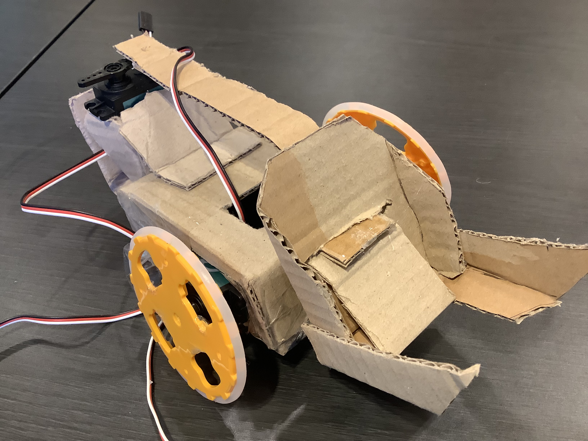

For our final project, we made a soccer game with maqueen robots. We presented this game in Stem Fair, and a lot of people liked it. I did most of the designing. I printed the walls, bleachers and soccer goals with Tinkercand and 3D printing.
Midterm project (forklift robot)

I made this robot with Jayden for my midterm project. We used ideas from Youtube and used cardboards to make the basic shape of robot. This robot can move around with joysitck, and the main feature is that it can lift stuff. We used microbit to program the robot.